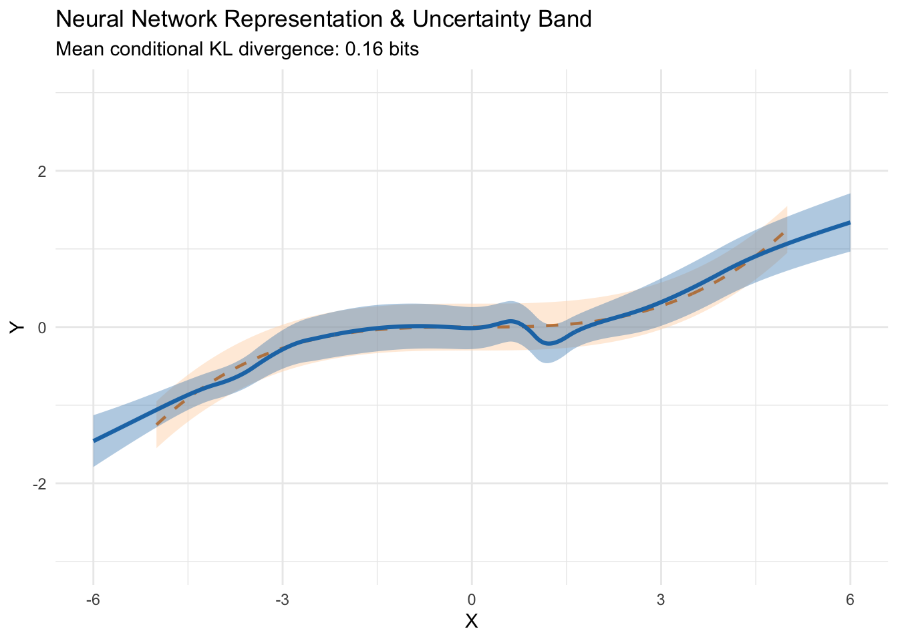

library(tidyverse)
library(ggformula)
set.seed(42)KL Divergence Minimization as a General Principle of Statistical Learning
Sources
https://youtu.be/JGDAZ4joUX8
https://doi.org/10.48550/arXiv.2011.08711
Simulating the True Data Generating Process
From the target specification, the true distribution is defined as:
\[X \sim \text{Uniform}(-5, 5)\] \[Y \mid X \sim \text{Normal}\left(\frac{X^3}{100}, 0.09\right)\]
Note that the variance is \(\sigma^2 = 0.09\), which corresponds to a standard deviation of \(\sigma = \sqrt{0.09} = 0.3\).
# Number of samples
n <- 300
# True DGP parameters
sim_data <- tibble(
x = runif(n, min = -5, max = 5)
) |>
mutate(
mu_true = (x^3) / 100,
y = rnorm(n, mean = mu_true, sd = sqrt(0.09))
)
# Data frame for true curve and 1 SD envelope
true_grid <- tibble(x = seq(-5, 5, length.out = 300)) |>
mutate(
mu_true = (x^3) / 100,
lower = mu_true - 0.3,
upper = mu_true + 0.3
)
# Base plot on sim_data, explicitly pass true_grid to the annotation layers
gf_point(y ~ x, data = sim_data, alpha = 0.4, size = 1.5) |>
gf_ribbon(lower + upper ~ x, data = true_grid, fill = "peachpuff", alpha = 0.6, inherit = FALSE) |>
gf_line(mu_true ~ x, data = true_grid, color = "darkorange", linetype = "dashed", linewidth = 1, inherit = FALSE) |>
gf_lims(y = c(-3, 3), x = c(-5, 5)) |>
gf_labs(
title = "True Data Distribution & Sampled Observations",
x = "X",
y = "Y"
) |>
gf_theme(theme_minimal())
The Statistical Learning Framework
Let the true data-generating density be \(p^*(x, y) = p^*(y \mid x) p^*(x)\) and our parametric candidate model be \(q_\theta(x, y) = q_\theta(y \mid x) p^*(x)\).
The Kullback-Leibler (KL) divergence from our model \(q_\theta\) to the true distribution \(p^*\) is:
\[D_{\text{KL}}(p^* \parallel q_\theta) = \int \int p^*(x, y) \log \frac{p^*(x, y)}{q_\theta(x, y)} \, dy \, dx\]
Expanding the logarithm:
\[D_{\text{KL}}(p^* \parallel q_\theta) = \mathbb{E}_{p^*}\left[\log p^*(X, Y)\right] - \mathbb{E}_{p^*}\left[\log q_\theta(X, Y)\right]\]
Because \(\mathbb{E}_{p^*}[\log p^*(X, Y)]\) depends strictly on the true world and is constant with respect to model parameters \(\theta\):
\[\arg\min_\theta D_{\text{KL}}(p^* \parallel q_\theta) = \arg\max_\theta \mathbb{E}_{p^*}\left[\log q_\theta(Y \mid X)\right]\]
Under the empirical distribution of a sample \((x_i, y_i)_{i=1}^n \sim p^*\), the empirical expectation replaces the population expectation:
\[\mathbb{E}_{p^*}\left[\log q_\theta(Y \mid X)\right] \approx \frac{1}{n}\sum_{i=1}^n \log q_\theta(y_i \mid x_i)\]
Thus, Maximum Likelihood Estimation (MLE) directly approximates minimal KL divergence from the truth.
Connecting KL Minimization to Mean Squared Error (MSE)
Consider a conditional Gaussian regression model with fixed variance \(\sigma^2\):
\[q_\theta(Y \mid X = x) = \frac{1}{\sqrt{2\pi\sigma^2}} \exp\left( -\frac{(y - f_\theta(x))^2}{2\sigma^2} \right)\]
Evaluating the log-likelihood under this model:
\[\log q_\theta(y_i \mid x_i) = -\frac{1}{2}\log(2\pi\sigma^2) - \frac{1}{2\sigma^2}\left(y_i - f_\theta(x_i)\right)^2\]
Maximizing this objective over \(\theta\) discards additive and scaling constants:
\[\arg\min_\theta D_{\text{KL}}(p^* \parallel q_\theta) \iff \arg\min_\theta \frac{1}{n} \sum_{i=1}^n \left(y_i - f_\theta(x_i)\right)^2\]
Minimizing squared error loss is mathematically identical to minimizing the KL divergence under homoscedastic Gaussian assumptions.
Model Fitting: Polynomial Hypothesis Classes
We fit three models via ordinary least squares (equivalent to KL minimization within each model family):
- Model 1 (Linear): \(\hat{y} = \beta_0 + \beta_1 x\)
- Model 2 (Cubic - Well Specified): \(\hat{y} = \beta_0 + \beta_1 x + \beta_2 x^2 + \beta_3 x^3\)
- Model 3 (Degree 9 - Overparameterized): \(\hat{y} = \sum_{k=0}^9 \beta_k x^k\)
mod_linear <- lm(y ~ x, data = sim_data)
mod_cubic <- lm(y ~ poly(x, 3, raw = TRUE), data = sim_data)
mod_deg9 <- lm(y ~ poly(x, 9, raw = TRUE), data = sim_data)
preds <- true_grid |>
mutate(
`Linear (Underfit)` = predict(mod_linear, newdata = true_grid),
`Cubic (True Form)` = predict(mod_cubic, newdata = true_grid),
`Degree 9 (High Variance)` = predict(mod_deg9, newdata = true_grid)
) |>
pivot_longer(
cols = c(`Linear (Underfit)`, `Cubic (True Form)`, `Degree 9 (High Variance)`),
names_to = "Model",
values_to = "y_hat"
)
# Option A: Start with gf_point, then add ribbon and lines explicitly
gf_point(y ~ x, data = sim_data, alpha = 0.25, size = 1.2) |>
gf_ribbon(lower + upper ~ x, data = true_grid, fill = "peachpuff", alpha = 0.5, inherit = FALSE) |>
gf_line(y_hat ~ x, data = preds, color = ~Model, linewidth = 1, inherit = FALSE) |>
gf_lims(y = c(-3, 3), x = c(-5, 5)) |>
gf_labs(
title = "Fitted Models via Empirical Risk / KL Minimization",
subtitle = "Peach band shows true conditional distribution mean ± 1 SD",
x = "X",
y = "Y"
) |>
gf_theme(theme_minimal())
Empirical KL Divergence Computation
For a Gaussian predictive distribution \(q_\theta(y \mid x) = \mathcal{N}(\mu(x), \sigma_\epsilon^2)\) where the true model is \(p^*(y \mid x) = \mathcal{N}(\mu^*(x), \sigma^{*2})\), the conditional KL divergence simplifies analytically to:
\[D_{\text{KL}}(p^*(\cdot \mid x) \parallel q_\theta(\cdot \mid x)) = \log\frac{\sigma_\epsilon}{\sigma^*} + \frac{\sigma^{*2} + (\mu^*(x) - \mu(x))^2}{2\sigma_\epsilon^2} - \frac{1}{2}\]
Assuming the estimated noise variance matches \(\hat{\sigma}^2 \approx \sigma^{*2} = 0.09\):
\[D_{\text{KL}}(p^*(\cdot \mid x) \parallel q_\theta(\cdot \mid x)) = \frac{(\mu^*(x) - \mu(x))^2}{2\sigma^{*2}}\]
We approximate the expected divergence \(\mathbb{E}_X [D_{\text{KL}}]\) across a test set:
test_data <- tibble(
x = runif(10000, -5, 5),
mu_true = (x^3) / 100
) |>
mutate(
pred_linear = predict(mod_linear, newdata = pick(everything())),
pred_cubic = predict(mod_cubic, newdata = pick(everything())),
pred_deg9 = predict(mod_deg9, newdata = pick(everything()))
)
sigma_sq_true <- 0.09
test_data |>
summarise(
KL_Linear = mean((mu_true - pred_linear)^2) / (2 * sigma_sq_true),
KL_Cubic = mean((mu_true - pred_cubic)^2) / (2 * sigma_sq_true),
KL_Deg9 = mean((mu_true - pred_deg9)^2) / (2 * sigma_sq_true)
) |>
pivot_longer(everything(), names_to = "Model", values_to = "Estimated_KL") |>
mutate(Model = str_remove(Model, "KL_")) |>
knitr::kable(digits = 4, caption = "Expected KL Divergence from True DGP (Lower is Better)")| Model | Estimated_KL |
|---|---|
| Linear | 0.2006 |
| Cubic | 0.0024 |
| Deg9 | 0.0196 |
The well-specified cubic model achieves near-zero divergence, whereas model mis-specification (linear) introduces irreducible approximation error (bias), and excessive capacity (degree 9) introduces estimation error (variance).
Learning Heteroscedastic Representations with a Neural Network
Instead of assuming a fixed variance \(\sigma^2\), we can parameterize both the conditional mean and conditional variance using a neural network:
\[z = f(x, \theta) = (z_0, z_1)^\top \in \mathbb{R}^2\] \[Y \mid Z \sim \text{Normal}\left(\mu = z_0, \, \sigma^2 = g(z_1)^2\right)\] \[g(z) = 0.01 + \log(1 + e^z) = 0.01 + \text{softplus}(z)\]
Network Specification
- Architecture: \(1 \to 32 \to 32 \to 2\)
- Activations: Continuously Differentiable Exponential Linear Units (
CELU) for hidden layers - Output layer: 2-dimensional linear representation producing latent variables \(z_0\) and \(z_1\)
Negative Log-Likelihood as KL Minimization
Under this model, minimizing empirical KL divergence equates to minimizing the negative log-likelihood (NLL):
\[\mathcal{L}(\theta) = \frac{1}{n}\sum_{i=1}^n \left[ \log g(z_{1, i}) + \frac{(y_i - z_{0, i})^2}{2\, g(z_{1, i})^2} \right]\]
library(torch)
# Set torch seed for reproducibility
torch_manual_seed(42)
# Define Network Architecture
GaussianMLP <- nn_module(
"GaussianMLP",
initialize = function() {
self$net <- nn_sequential(
nn_linear(1, 32),
nn_celu(),
nn_linear(32, 32),
nn_celu(),
nn_linear(32, 2)
)
},
forward = function(x) {
self$net(x)
}
)
model <- GaussianMLP()
optimizer <- optim_adam(model$parameters, lr = 0.01)
# Prepare tensors
x_train <- torch_tensor(matrix(sim_data$x, ncol = 1), dtype = torch_float())
y_train <- torch_tensor(matrix(sim_data$y, ncol = 1), dtype = torch_float())
# Heteroscedastic Gaussian NLL loss function
gaussian_nll_loss <- function(z, y) {
mu <- z[, 1, drop = FALSE]
# g(z1) = 0.01 + softplus(z1)
sigma <- 0.01 + nnf_softplus(z[, 2, drop = FALSE])
# Negative log likelihood (omitting constant 0.5 * log(2 * pi))
loss <- torch_log(sigma) + 0.5 * torch_pow((y - mu) / sigma, 2)
torch_mean(loss)
}
# Training loop
epochs <- 1500
for (epoch in 1:epochs) {
optimizer$zero_grad()
z_pred <- model(x_train)
loss <- gaussian_nll_loss(z_pred, y_train)
loss$backward()
optimizer$step()
}Model Evaluation and Representation Visualization
We compute predictions across the range \(x \in [-6, 6]\) along with the conditional standard deviation band \(\mu(x) \pm \sigma(x)\).
# Predict over evaluation grid
eval_grid <- tibble(x = seq(-6, 6, length.out = 400))
x_test_tensor <- torch_tensor(matrix(eval_grid$x, ncol = 1), dtype = torch_float())
model$eval()
with_no_grad({
z_test <- model(x_test_tensor)
mu_pred <- as.numeric(z_test[, 1])
sigma_pred <- as.numeric(0.01 + nnf_softplus(z_test[, 2]))
})
nn_eval <- eval_grid |>
mutate(
mu_hat = mu_pred,
sigma_hat = sigma_pred,
lower_band = mu_hat - sigma_hat,
upper_band = mu_hat + sigma_hat
)
# Calculate conditional KL divergence in bits (log2 base)
# KL(p* || q) = log(sigma_q / sigma_p) + (sigma_p^2 + (mu_p - mu_q)^2)/(2 * sigma_q^2) - 0.5
sigma_true <- sqrt(0.09)
eval_kl <- eval_grid |>
filter(x >= -5 & x <= 5) |> # Evaluate on support of p*(X)
mutate(
mu_p = (x^3) / 100,
mu_q = approx(nn_eval$x, nn_eval$mu_hat, xout = x)$y,
sigma_q = approx(nn_eval$x, nn_eval$sigma_hat, xout = x)$y,
kl_nats = log(sigma_q / sigma_true) +
(sigma_true^2 + (mu_p - mu_q)^2) / (2 * (sigma_q^2)) - 0.5,
kl_bits = kl_nats / log(2)
)
mean_kl_bits <- round(mean(eval_kl$kl_bits), 2)
# Visualization matching the model diagnostic plot
gf_ribbon(lower + upper ~ x, data = true_grid, fill = "peachpuff", alpha = 0.5) |>
gf_line(mu_true ~ x, data = true_grid, color = "darkorange", linetype = "dashed", linewidth = 0.8) |>
gf_ribbon(lower_band + upper_band ~ x, data = nn_eval, fill = "#1f77b4", alpha = 0.35, inherit = FALSE) |>
gf_line(mu_hat ~ x, data = nn_eval, color = "#1f77b4", linewidth = 1.1, inherit = FALSE) |>
gf_lims(y = c(-3, 3), x = c(-6, 6)) |>
gf_labs(
title = "Neural Network Representation & Uncertainty Band",
subtitle = paste0("Mean conditional KL divergence: ", mean_kl_bits, " bits"),
x = "X",
y = "Y"
) |>
gf_theme(theme_minimal())